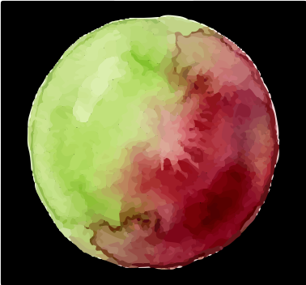

큐레이션
일본 각 지역의 토양·기후·양조 철학을 기준으로 생산자와 라인업을 선정합니다.

베레종 웍스 Verasion WorksJAPANESE WINE IMPORT
베레종 웍스는 일본 소규모 와이너리의 정체성과 품질을 존중하며, 레스토랑·와인바·리테일 파트너에게 안정적으로 공급합니다.
일본 각 지역의 토양·기후·양조 철학을 기준으로 생산자와 라인업을 선정합니다.
입항 일정과 재고를 투명하게 공유해 업장의 와인 리스트 운영 리스크를 낮춥니다.
온트레이드 채널 중심으로 회전율, 페어링 적합성, 가격대 밸런스를 함께 설계합니다.